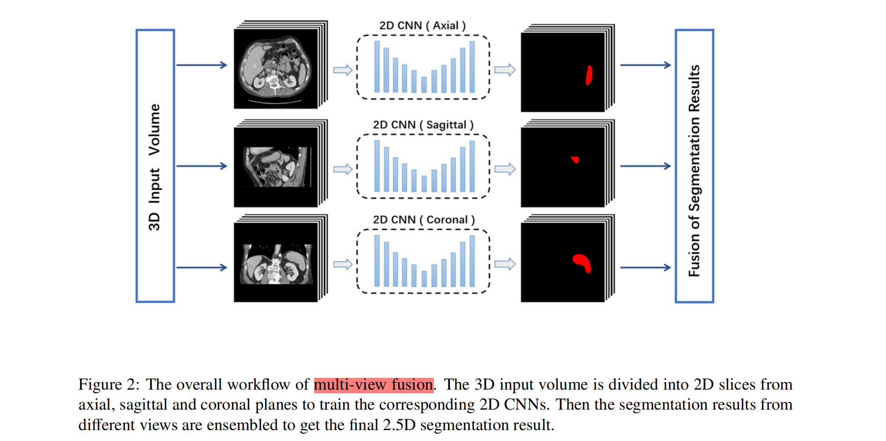
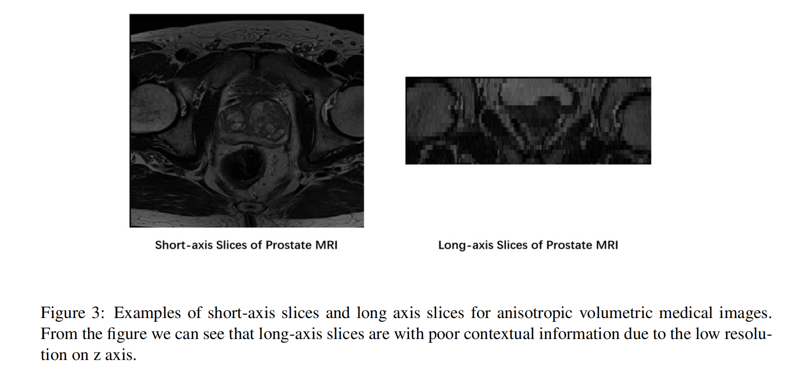
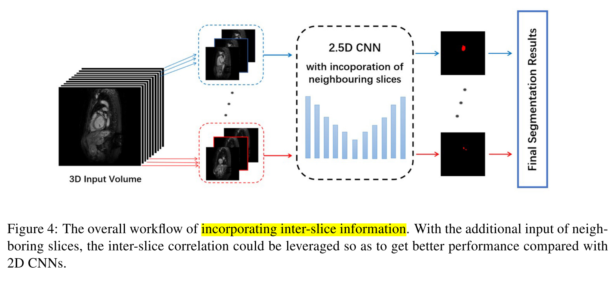
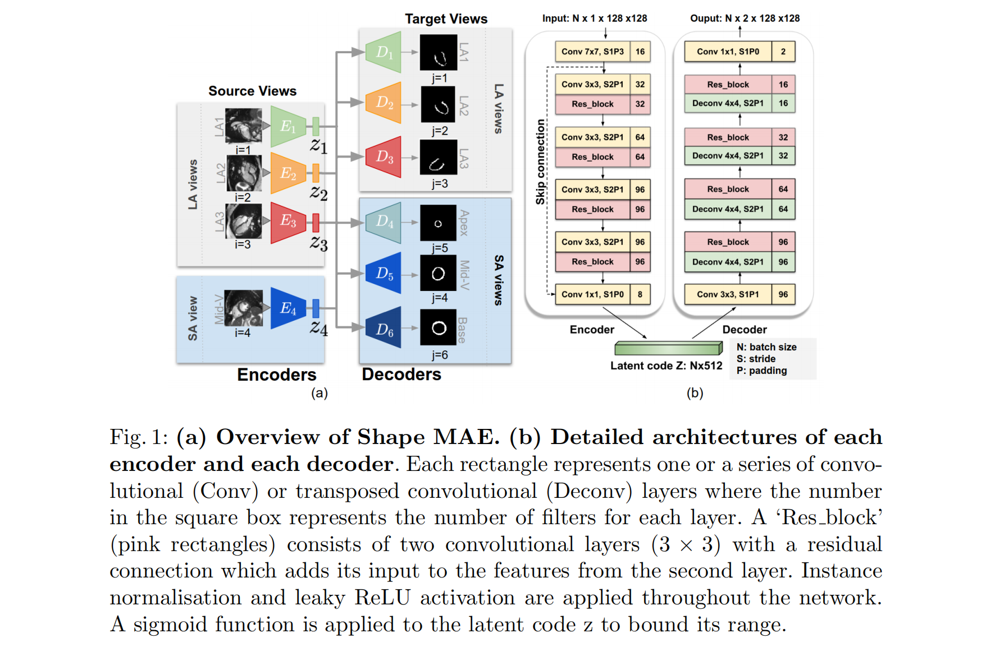
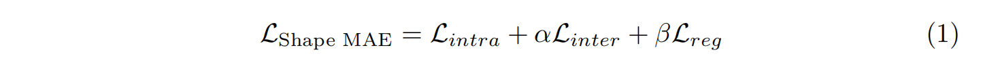
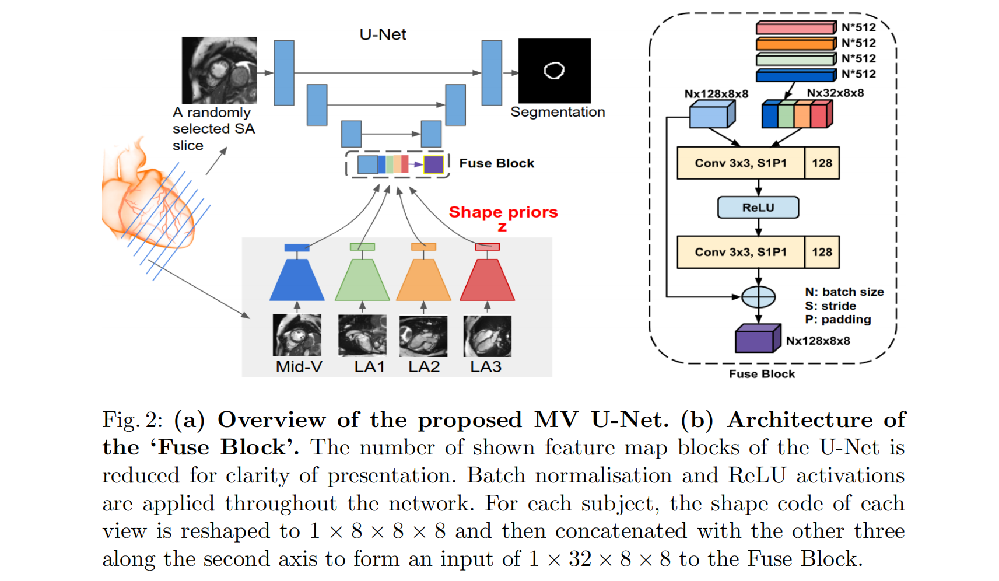
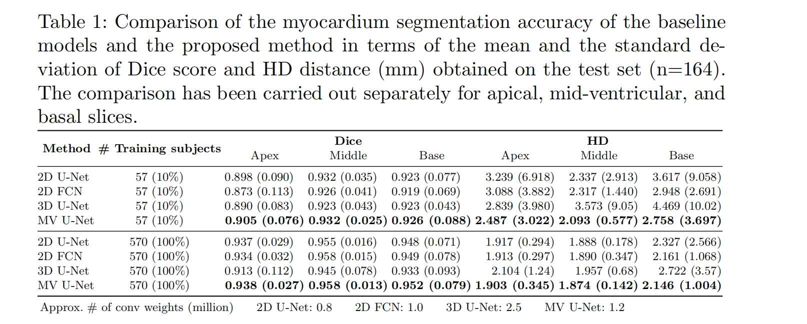
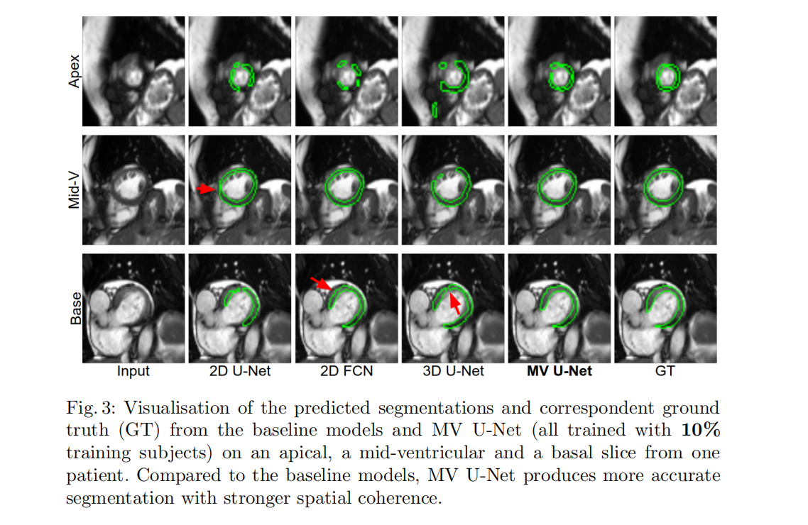

🎯Topic: 2.5D methods for Volumetric Medical Image Segmentation
论文简介
（1）2.5D 医学图像分割网络综述，发表于 2020 年 10 月。
Exploring Efficient Volumetric Medical Image Segmentation Using 2.5D Method: An Empirical Study
（2）2.5D 分割网络实例，发表在 MICCAI 2019
Learning shape priors for robust cardiac MR segmentation from multi-view images
Abstract
医学图像数据（CT/MRI）大多是 3D 的，然而 3D CNN 并不一定是好的选择。更多的推理时间、计算代价、参数的增加有过拟合的风险（医学图像标注获取昂贵）。为了解决这一问题，人们提出了许多 2.5D 分割方法，以更低的计算成本利用体积空间信息。
1. Introduction
3D 医学图像，如 CT 和 MRI 已广泛应用于临床诊断。体积图像的自动分割在生物医学应用中变得越来越重要。目前主要两种策略：（1）将三维体积切割成二维切片，并根据切片内信息训练二维 CNN 进行分割；（2）3D CNN。
两种方法有其各自的优缺点：
- ✅ 2D CNN 更轻的计算和更高的推理速度。
- ❌ 2D CNN 忽略相邻切片之间的信息，阻碍了分割精度的提高。
- ✅ 3D CNN 具有对空间信息的感知能力。
- ❌ 3D CNN 需要较高的计算成本，更高的推理延迟，参数越多，过拟合风险越大（尤其是小的数据集），这阻碍了进一步临床应用。
为了弥补 2D 和 3D CNN 之间的差距，提出了许多 2.5D 分割方法（也称为伪 3D 方法），通过设计新的体系结构或使用策略将体积信息融合到 2D CNN 中来实现高效的医学图像体积分割。
本篇文章的主要贡献可以总结如下：
- 本文综述了 2.5D 医学图像分割方法的最新进展，将 2.5D 医学图像分割方法分为多视图融合（multi-view fusion）、融合层间信息（incorporating inter-slice information）和融合二维/三维特征（fusing 2D/3D features）三大类。
- 对这些 2.5D 方法在 3 各具有代表性的数据集（CT/MRI、心脏/前列腺/腹部）上进行了大规模的评估、比较。
2. Related Work
本节对多视图融合（multi-view fusion）、融合层间信息（incorporating inter-slice information）和融合二维/三维特征（fusing 2D/3D features）三大类 2.5D 分割方法进行综述。
2.1 多视图融合（multi-view fusion）
为了将体积空间信息整合到二维 CNN 中，一个简单而直观的解决方案是多视图融合（MVF）。

多视图包括矢状面（sagittal）、冠状面（coronal）、横断面（axial）。训练 3 个2D CNN 分别从矢状面、冠状面和横断面进行分割，再将 3 个视图的结果融合在一起，可以充分利用 3D 空间信息，从而获得比 2D CNN 更好的分割结果。
融合的方式有：多数投票、 Volumetric Fusion Net（一个浅层的 3D CNN）。
2.2. 融合层间信息（Incorporating inter-slice information）
三维空间的分辨率并不总是相同的，有时 x 和 y 轴的图像分辨率比 z 轴高十倍以上（直肠癌数据就是这样 shape=768x696x48）。这种情况下训练长轴（冠状面：xz 或 矢状面：yz）是不可取的。

另一种策略将层间信息整合到二维 CNN 中，以探索空间相关性。网络不仅可以利用切片的信息，还可以利用相邻切片的信息。网络的输入是连续的切片，输出是对应中间切片的分割结果。通过整合片间信息，可以利用体积的空间相关性，同时避免了 3D 计算的沉重负担。

不少方法都是喂入 3 张 slices，但是直接添加相邻的片作为多通道输入可能效率低下。当相邻切片混合成通道维时，输入切片的信息在第一卷积层融合，这一过程网络很难提取用于区分每个片的有用信息。
计新的层间信息抽取体系结构成为研究的重点。
- bi-directional convolutional long short-term memory (BC-LSTM) ：3D 体的 2D 切片被视为一个时间序列，以提取切片间的上下文和特征；
- inter-slice attention module：利用相邻切片的信息生成 attention mask，为分割提供先验形状调节；contextual-attention block：使用片与片之间的元素减法，强制模型聚焦于边界区域。
2.3. 融合二维/三维特征（Fusing 2D/3D features）
一些工作也集中在融合从二维和三维 CNN 提取的特征，虽然这些方法仍然使用三维卷积来提取空间信息，但是与训练纯三维 CNN 相比，总体计算成本降低了。
#########################################################################
2.5D 分割网络实例，MICCAI 2019
Abstract
受经验丰富的临床医生如何通过多个标准视图（即长轴和短轴视图）评估心脏形态和功能的启发，本篇论文提出了一种新的方法，在不同的二维标准视图中学习解剖形状先验，并利用这些先验从短轴（SA） MR 图像中分割左心室 (LV) 心肌。
提出的分割方法具有二维网络的优点，但同时结合了空间背景。在不同的短轴切片上实现了准确和稳健的心肌分割。
1. Introduction
基于二维的分割网络，以 slice-by-slice 的方式训练，对于复杂形状的目标，小目标的情况，分割的结果不太理想。这是由于 2D 网络没有结合相邻的 short-axis(SA) 图像或 long-axis(LA) 图像的空间信息。
对于三维的分割网络，心脏的三维空间背景可能受到潜在的层间运动伪影和低平面空间（SA）分辨率的影响，从而限制了它们的分割性能。（直肠癌使用单纯的 3D 网络，估计无法取得良好的效果）
x轴和y轴保持的分辨率远高于z轴，3D cnn的性能优势并不明显，有时甚至不如一些2.5D方法。
经验丰富的临床医生能够从多个标准视图评估心脏形态和功能，即使用 SA 和 LA 图像来形成对心脏解剖的理解。直觉上，从多个标准视图学习到的表示对 SA 切片的分割任务是有益的。受此启发，论文提出了一种通过四个标准视图学习解剖学先验知识的方法，并利用该方法对二维 SA 图像进行分割。
贡献总结：
- a) developed a novel autoencoder architecture (Shape MAE)，它从多个标准视图中学习心脏形状的潜在表示；
- b) developed a segmentation network (multi-view U-Net)，结合多视图图像的解剖形状先验来指导SA图像的分割；
- c) 与 2D/3D 方法进行评估，表明该方法具有更强的鲁棒性，且对训练数据大小的依赖性较小。
2. Methods
提出的方法包含两个新的架构：
- shape-aware multi-view autoencoder (Shape MAE)：从标准心脏采集平面（包括短轴和长轴视图）学习解剖形状先验；
- multi-view U-Net：通过将 Shape MAE 学习到的解剖学先验信息整合到改进的 U-Net 体系结构中，实现心脏图像分割。
Shape MAE: Shape-aware multi-view autoencoder
通过多任务学习从标准心脏视图学习解剖形状先验。对于给定输入的原图 $X_i$，网络学习 $X_i$ 的低维表示 $z_i$，它最能重建所有 $j$ 个目标视图分割 $Y_j$。
本论文采用 4 source views $X_i \ (i = 1, 2, 3, 4)$，分别是 3 long-axis(LA) views，和 1 short-axis(SA) views，。
LA: two-chamber view (LA1), three-chamber view (LA2), the four-chamber view (LA3)
SA: mid-ventricular slice (Mid-V) from the SA view

网络从其中一个视图学习低维表征 $z_i$ 来重建分割图。分割图的视图 $Y_i$ 有 6 个，4 个对应源视图，另外两个为 SA lices：apical 和 basal。
损失函数：

- 前两项为交叉熵；
- 最后一项是 latent representations $z_i$ 的正则化项；
该网络的原理是，不同的视图需要独立的函数将它们映射到描述全局形状特征的潜空间；而将这个潜空间转换到另一个视图或平面也需要一个特定的投影函数。根据六个目标视图而不是单一视图来预测心肌的形状，鼓励网络学习和利用不同视图之间的相关性，从而形成一个全局的、视图不变的形状表征，而不是一个特定视图的局部表征。这个框架中的所有编码器和解码器都是以多任务学习的方式联合训练的，这样做的好处是避免过度拟合，鼓励模型的泛化。
MV U-Net: Multi-view U-Net.
MV U-Net 相比于原始的 U-Net 卷积核更少一些（取决于当前的任务），并且结合 shape MAE 学习到的解剖形状先验信息。

Fuse Block 模块由两个卷积核 (3 × 3) 和一个残差连接组成，通过可学习权值将不同视图的形状表示结合起来。给定任意短轴图像切片 $I_p$，和它相应的 shape representation $z^{p}_1, z^{p}_2, z^{p}_3, z^{p}4$（通过 Shape MAE 获得），网络可以将先验知识提炼为网络的高级特征，使其能够通过多视图信息有效地细化分割：$S_p = f{MV\ U-Net}(I^p, z^{p}_1, z^{p}_2, z^{p}_3, z^{p}_4; \theta)$。
该网络采用标准的交叉熵损失进行训练。
3. Experiments and Results


4 Conclusion
提出了一个形状感知的多视图自动编码器，一个能够从多个标准视图学习解剖形状先验信息的多视图 U-Net，该网络是对原始 U-Net 架构的修改，合并了学习的形状先验信息，以提高心脏分割的鲁棒性。
本论文将长轴 LA 和短轴 SA 结合起来，利用长轴图像的空间背景来指导短轴图像的分割。从 LA 视图中提取的额外解剖信息，对那些具有挑战性的切片的分割特别有利。
MV U-Net 保持了 2D 网络的计算优势，在有限的训练数据下实现较高的分割性能。
什么是 LA？什么是 SA？
✅答：即长轴和短轴数据。例如在直肠数据中，一个 .nii.gz 的 shape 为 768x696x48，那么 xy 为短轴，xz/yz 为长轴。xy 为短轴，横断面，分辨率较高。长轴分辨率低，数据模糊。